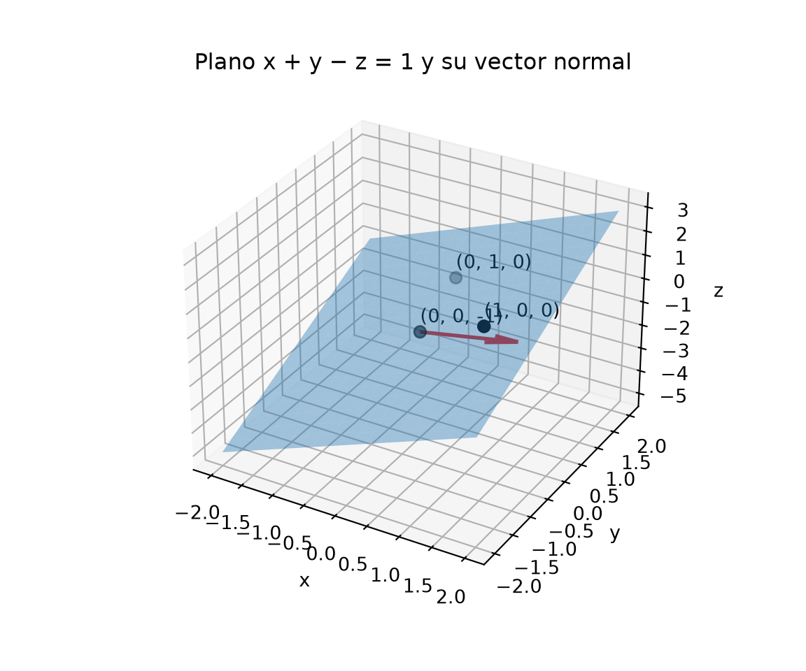
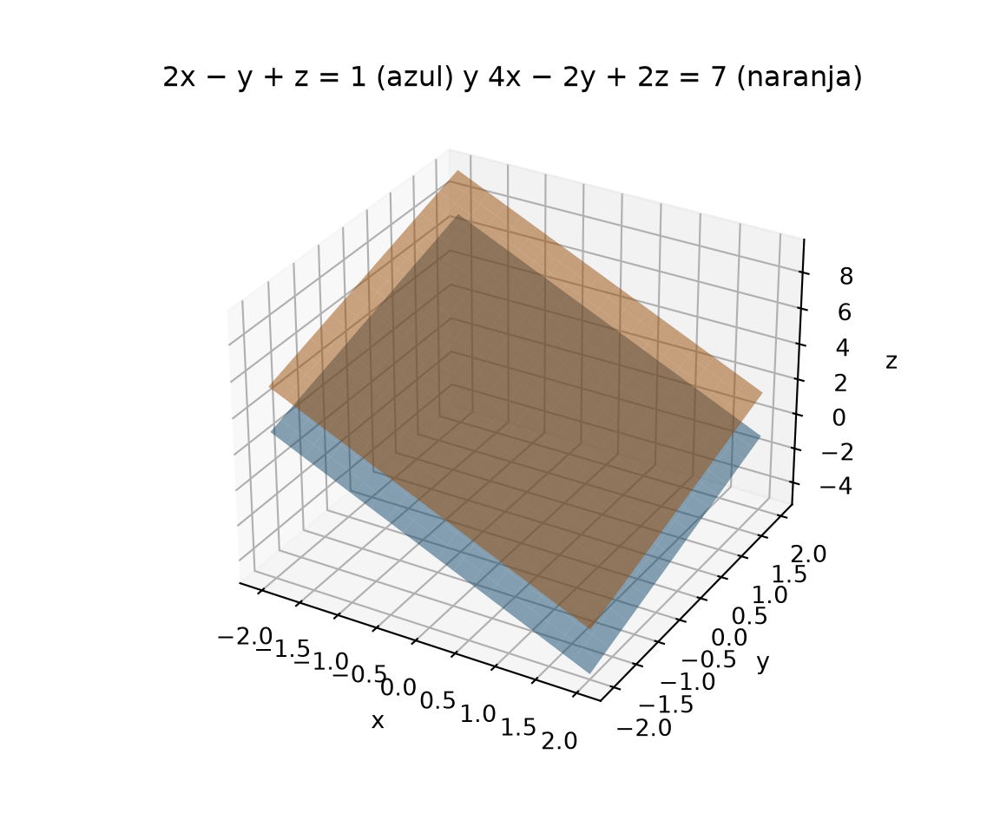
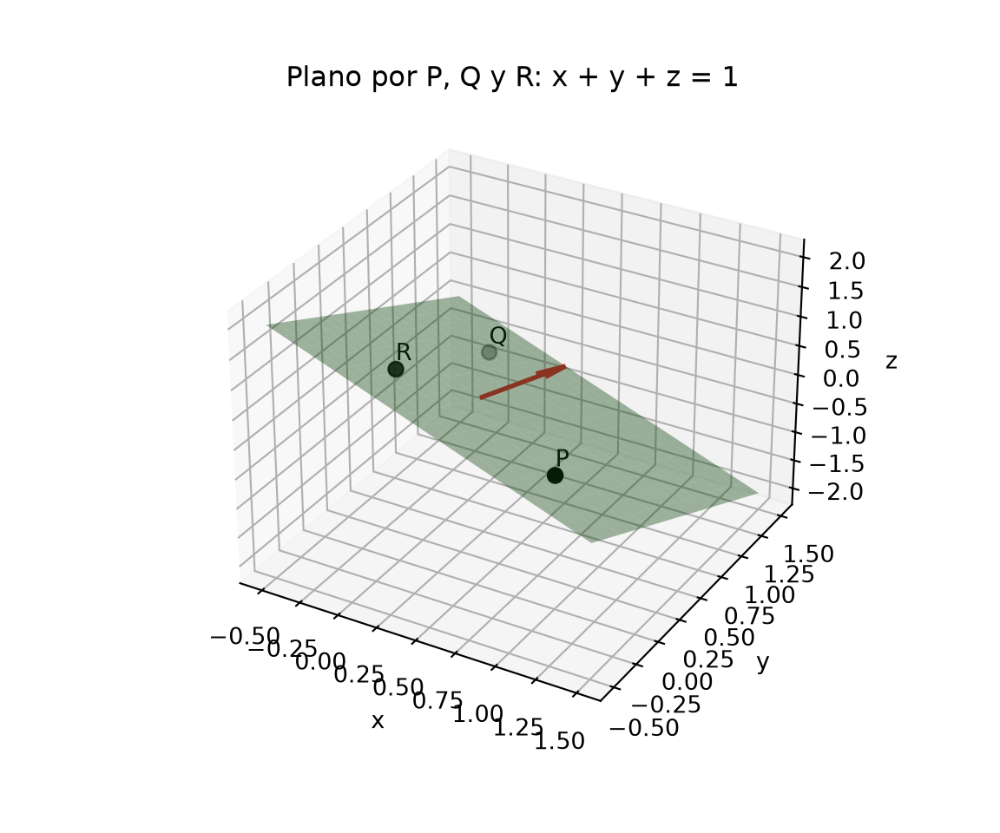
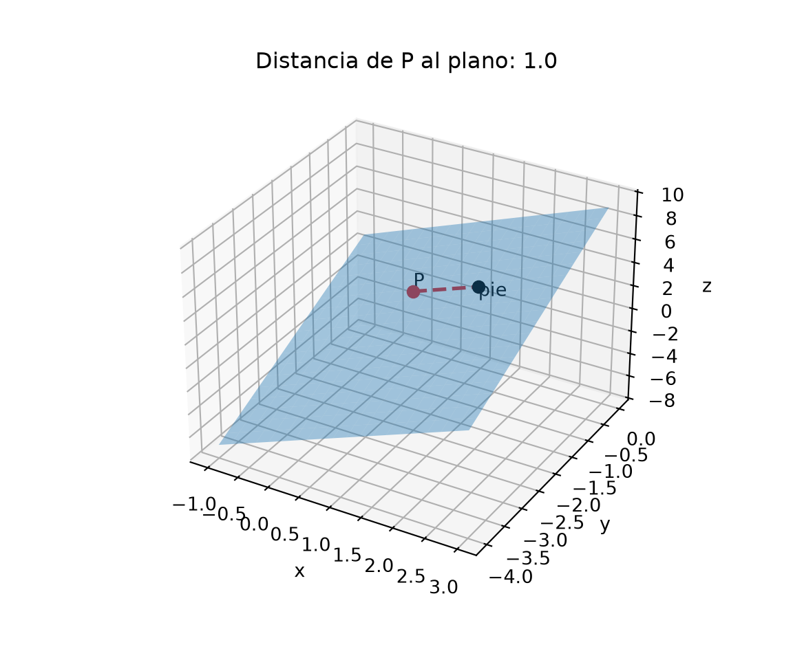
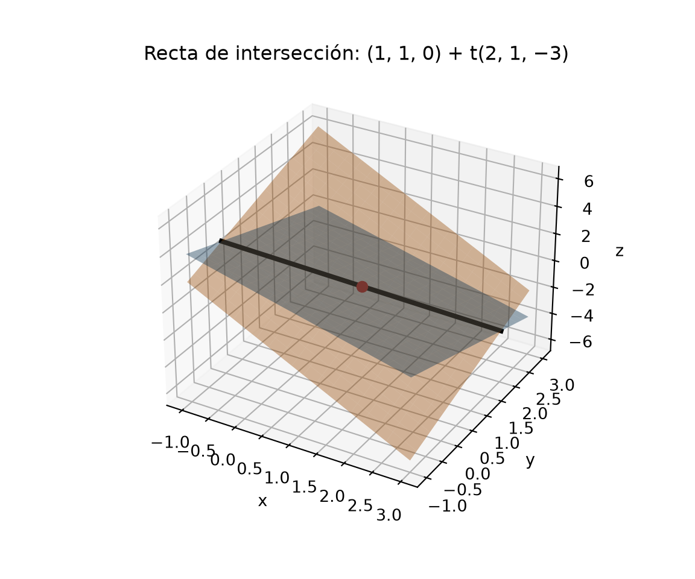
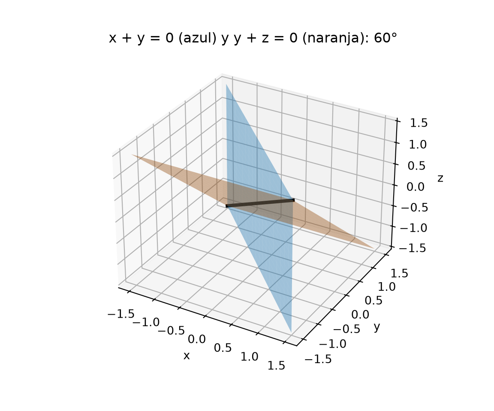

Código
import numpy as np
import matplotlib.pyplot as pltFecha: por definir
En la Unidad 2 de Geometría Analítica trabajan con rectas y planos en el espacio. En este capítulo resolveremos ejercicios de esa unidad con Python: primero las operaciones con NumPy y después la gráfica en 3D para comprobar que el resultado tiene sentido.
Todo lo que necesitamos ya lo conocemos:
np.meshgrid(), de las funciones de dos variables.plot_surface(), de Visualización III.Al terminar este capítulo podrás:
import numpy as np
import matplotlib.pyplot as pltEl plano \(ax + by + cz = d\) tiene vector normal \(\mathbf{n} = (a, b, c)\), y si \(c \neq 0\) podemos despejar
\[z = \frac{d - ax - by}{c},\]
que es una función de dos variables. Por eso se grafica igual que \(f(x, y)\): creamos una malla, evaluamos \(z\) y la dibujamos con plot_surface() sobre ejes 3D, que se escriben con ax. en lugar de plt..
| Geometría Analítica | NumPy | Ejemplo |
|---|---|---|
| Vector normal de \(ax + by + cz = d\) | n = np.array([a, b, c]) |
\(x + y - z = 1 \Rightarrow\) np.array([1, 1, -1]) |
| Producto punto \(\mathbf{u} \cdot \mathbf{v}\) | u @ v |
¿Un punto está en el plano? n @ P == d |
| Producto vectorial \(\mathbf{u} \times \mathbf{v}\) | np.cross(u, v) |
Normal de un plano dado por dos vectores. |
| Norma \(\lVert \mathbf{v} \rVert\) | np.linalg.norm(v) |
Distancias. |
| Resolver un sistema | np.linalg.solve(A, b) |
Un punto común a dos planos. |
| Ejes 3D | ax = plt.figure().add_subplot(projection="3d") |
Superficies, puntos y rectas en el espacio. |
Para no repetir el despeje en cada ejemplo, lo guardamos en una función (como vimos en el capítulo de funciones):
def plano_z(n, d, X, Y):
"""Despeja z del plano a·x + b·y + c·z = d (requiere c ≠ 0)."""
a, b, c = n
return (d - a * X - b * Y) / cLos siguientes ejemplos vienen de la lista de ejercicios de la Unidad 2, ordenados de básico a avanzado.
Represente gráficamente el plano \(x + y - z = 1\).
En papel buscamos los cortes con los ejes: con \(y = z = 0\) queda \(x = 1\); con \(x = z = 0\) queda \(y = 1\); y con \(x = y = 0\) queda \(z = -1\). En Python graficamos el plano, marcamos esos tres puntos y dibujamos el vector normal \(\mathbf{n} = (1, 1, -1)\) con ax.quiver(), que dibuja una flecha en 3D:
n = np.array([1, 1, -1])
d = 1
x = np.linspace(-2, 2, 20)
X, Y = np.meshgrid(x, x)
Z = plano_z(n, d, X, Y) # z = x + y - 1
ax = plt.figure(figsize=(6, 5)).add_subplot(projection="3d")
ax.plot_surface(X, Y, Z, alpha=0.4, color="tab:blue") # alpha: transparente para ver los puntos
# Cortes con los ejes
cortes = np.array([[1, 0, 0], [0, 1, 0], [0, 0, -1]])
ax.scatter(cortes[:, 0], cortes[:, 1], cortes[:, 2], color="black", s=40)
for p in cortes:
ax.text(p[0], p[1], p[2] + 0.4, "(" + str(p[0]) + ", " + str(p[1]) + ", " + str(p[2]) + ")")
# Vector normal: ax.quiver(x0, y0, z0, dx, dy, dz) dibuja una flecha de (x0, y0, z0) en la dirección (dx, dy, dz)
ax.quiver(0, 0, -1, n[0], n[1], n[2], color="tab:red", linewidth=2)
ax.set_xlabel("x")
ax.set_ylabel("y")
ax.set_zlabel("z")
ax.set_title("Plano x + y − z = 1 y su vector normal")
plt.show()
cortes[:, 0] toma la columna 0 (todas las \(x\)), igual que en el capítulo de NumPy.
Determine si los planos \(2x - y + z = 1\) y \(4x - 2y + 2z = 7\) son paralelos distintos o coincidentes.
Dos planos son paralelos si sus normales son paralelas, es decir, si una es múltiplo de la otra. En ese caso su producto vectorial es el vector cero. Son coincidentes si además las ecuaciones completas son proporcionales:
n1 = np.array([2, -1, 1])
d1 = 1
n2 = np.array([4, -2, 2])
d2 = 7
print("n2 / n1 =", n2 / n1) # [2. 2. 2.]: n2 = 2·n1n2 / n1 = [2. 2. 2.]print("n1 × n2 =", np.cross(n1, n2)) # [0 0 0]: las normales son paralelasn1 × n2 = [0 0 0]print("d2 / d1 =", d2 / d1) # 7.0 ≠ 2: las ecuaciones no son proporcionalesd2 / d1 = 7.0Las normales son proporcionales (factor 2), pero \(d_2 / d_1 = 7 \neq 2\): los planos son paralelos distintos. La gráfica lo confirma: nunca se tocan.
x = np.linspace(-2, 2, 20)
X, Y = np.meshgrid(x, x)
ax = plt.figure(figsize=(6, 5)).add_subplot(projection="3d")
ax.plot_surface(X, Y, plano_z(n1, d1, X, Y), alpha=0.5, color="tab:blue")
ax.plot_surface(X, Y, plano_z(n2, d2, X, Y), alpha=0.5, color="tab:orange")
ax.set_xlabel("x")
ax.set_ylabel("y")
ax.set_zlabel("z")
ax.set_title("2x − y + z = 1 (azul) y 4x − 2y + 2z = 7 (naranja)")
plt.show()
Encuentre una ecuación vectorial y una ecuación general del plano que pasa por \(P = (1, 0, 0)\), \(Q = (0, 1, 0)\) y \(R = (0, 0, 1)\).
Los vectores \(\overrightarrow{PQ} = Q - P\) y \(\overrightarrow{PR} = R - P\) están sobre el plano, así que:
P = np.array([1, 0, 0])
Q = np.array([0, 1, 0])
R = np.array([0, 0, 1])
PQ = Q - P
PR = R - P
print("Ecuación vectorial: x =", P, "+ s", PQ, "+ t", PR)Ecuación vectorial: x = [1 0 0] + s [-1 1 0] + t [-1 0 1]n = np.cross(PQ, PR) # Normal al plano
d = n @ P # Sustituimos P en n · x = d
print("Normal:", n, " d =", d) # x + y + z = 1Normal: [1 1 1] d = 1# Comprobación: Q y R también cumplen la ecuación
print("n · Q =", n @ Q, " n · R =", n @ R)n · Q = 1 n · R = 1La ecuación general es \(x + y + z = 1\). En la gráfica, la normal sale del centroide del triángulo \(PQR\):
x = np.linspace(-0.5, 1.5, 20)
X, Y = np.meshgrid(x, x)
ax = plt.figure(figsize=(6, 5)).add_subplot(projection="3d")
ax.plot_surface(X, Y, plano_z(n, d, X, Y), alpha=0.4, color="tab:green")
puntos = np.array([P, Q, R])
ax.scatter(puntos[:, 0], puntos[:, 1], puntos[:, 2], color="black", s=40)
for nombre, p in zip(["P", "Q", "R"], puntos):
ax.text(p[0], p[1], p[2] + 0.15, nombre)
centro = (P + Q + R) / 3
ax.quiver(centro[0], centro[1], centro[2], n[0], n[1], n[2],
length=0.6, normalize=True, color="tab:red", linewidth=2) # normalize: flecha de largo 0.6
ax.set_xlabel("x")
ax.set_ylabel("y")
ax.set_zlabel("z")
ax.set_title("Plano por P, Q y R: x + y + z = 1")
plt.show()
Calcule la distancia de \(P = (1, -2, 4)\) al plano \(2x + 2y - z + 3 = 0\).
Primero escribimos el plano como \(2x + 2y - z = -3\), así \(\mathbf{n} = (2, 2, -1)\) y \(d = -3\). La distancia es
\[\text{dist} = \frac{|\mathbf{n} \cdot P - d|}{\lVert \mathbf{n} \rVert},\]
y el pie de la perpendicular (el punto del plano más cercano a \(P\)) es \(P - \dfrac{\mathbf{n} \cdot P - d}{\mathbf{n} \cdot \mathbf{n}}\,\mathbf{n}\):
P = np.array([1, -2, 4])
n = np.array([2, 2, -1])
d = -3
distancia = abs(n @ P - d) / np.linalg.norm(n)
pie = P - (n @ P - d) / (n @ n) * n
print("Distancia:", distancia) # 1.0Distancia: 1.0print("Pie de la perpendicular:", pie)Pie de la perpendicular: [ 1.66666667 -1.33333333 3.66666667]print("¿El pie está en el plano?", np.isclose(n @ pie, d))¿El pie está en el plano? Trueprint("¿P - pie es paralelo a n?", np.allclose(np.cross(P - pie, n), 0))¿P - pie es paralelo a n? Truex = np.linspace(-1, 3, 20)
y = np.linspace(-4, 0, 20)
X, Y = np.meshgrid(x, y)
ax = plt.figure(figsize=(6, 5)).add_subplot(projection="3d")
ax.plot_surface(X, Y, plano_z(n, d, X, Y), alpha=0.4, color="tab:blue")
ax.scatter(P[0], P[1], P[2], color="tab:red", s=40)
ax.text(P[0], P[1], P[2] + 0.4, "P")
ax.scatter(pie[0], pie[1], pie[2], color="black", s=40)
ax.text(pie[0], pie[1], pie[2] - 0.8, "pie")
ax.plot([P[0], pie[0]], [P[1], pie[1]], [P[2], pie[2]], "--", color="tab:red", linewidth=2)
ax.set_xlabel("x")
ax.set_ylabel("y")
ax.set_zlabel("z")
ax.set_title("Distancia de P al plano: " + str(round(distancia, 4)))
plt.show()
Matplotlib no usa la misma escala en los tres ejes, así que el segmento puede no verse perpendicular al plano. Por eso lo comprobamos con números: np.cross(P - pie, n) es el vector cero, es decir, el segmento es paralelo a la normal.
Encuentre la recta de intersección de \(x + y + z = 2\) y \(2x - y + z = 1\).
La recta está en los dos planos, así que es perpendicular a las dos normales: su dirección es \(\mathbf{n}_1 \times \mathbf{n}_2\). Para un punto de la recta, fijamos \(z = 0\) y resolvemos el sistema de \(2 \times 2\) que queda, como en la sección Un sistema de ecuaciones es un cruce de rectas:
\[\begin{cases} x + y = 2 \\ 2x - y = 1 \end{cases}\]
n1 = np.array([1, 1, 1])
d1 = 2
n2 = np.array([2, -1, 1])
d2 = 1
direccion = np.cross(n1, n2)
A = np.array([[1, 1],
[2, -1]])
b = np.array([d1, d2])
x0, y0 = np.linalg.solve(A, b) # Con z = 0
P0 = np.array([x0, y0, 0])
print("Dirección:", direccion) # (2, 1, -3)Dirección: [ 2 1 -3]print("Punto:", P0) # (1, 1, 0)Punto: [1. 1. 0.]print("¿P0 está en los dos planos?", np.isclose(n1 @ P0, d1), np.isclose(n2 @ P0, d2))¿P0 está en los dos planos? True TrueLa recta es \(\mathbf{x} = (1, 1, 0) + t\,(2, 1, -3)\). Para dibujarla calculamos varios puntos \(P_0 + t\,\mathbf{d}\); t[:, None] convierte t en una columna para que broadcasting multiplique cada valor de \(t\) por el vector dirección:
x = np.linspace(-1, 3, 20)
X, Y = np.meshgrid(x, x)
t = np.linspace(-1, 1, 50)
recta = P0 + t[:, None] * direccion # 50 puntos (x, y, z), uno por fila
ax = plt.figure(figsize=(6, 5)).add_subplot(projection="3d")
ax.plot_surface(X, Y, plano_z(n1, d1, X, Y), alpha=0.4, color="tab:blue")
ax.plot_surface(X, Y, plano_z(n2, d2, X, Y), alpha=0.4, color="tab:orange")
ax.plot(recta[:, 0], recta[:, 1], recta[:, 2], color="black", linewidth=3)
ax.scatter(P0[0], P0[1], P0[2], color="tab:red", s=40)
ax.set_xlabel("x")
ax.set_ylabel("y")
ax.set_zlabel("z")
ax.set_title("Recta de intersección: (1, 1, 0) + t(2, 1, −3)")
plt.show()
Determine el ángulo agudo entre los planos \(x + y = 0\) y \(y + z = 0\).
El ángulo entre dos planos es el ángulo entre sus normales; el valor absoluto da el ángulo agudo:
\[\cos \theta = \frac{|\mathbf{n}_1 \cdot \mathbf{n}_2|}{\lVert \mathbf{n}_1 \rVert \, \lVert \mathbf{n}_2 \rVert}\]
n1 = np.array([1, 1, 0])
n2 = np.array([0, 1, 1])
cos_theta = abs(n1 @ n2) / (np.linalg.norm(n1) * np.linalg.norm(n2))
print("θ =", np.rad2deg(np.arccos(cos_theta)).round(2), "grados") # 60°θ = 60.0 gradosPara graficarlos hay un problema: en \(x + y = 0\) el coeficiente de \(z\) es cero, así que no podemos despejar \(z\) y plano_z() no sirve. Es un plano vertical. La solución es usar la forma paramétrica \(\mathbf{x} = P_0 + s\,\mathbf{u} + t\,\mathbf{v}\), con dos vectores \(\mathbf{u}\) y \(\mathbf{v}\) sobre el plano (perpendiculares a la normal). Ahora la malla se hace sobre los parámetros \(s\) y \(t\):
| Plano | \(P_0\) | \(\mathbf{u}\) | \(\mathbf{v}\) |
|---|---|---|---|
| \(x + y = 0\) | \((0, 0, 0)\) | \((1, -1, 0)\) | \((0, 0, 1)\) |
| \(y + z = 0\) | \((0, 0, 0)\) | \((1, 0, 0)\) | \((0, 1, -1)\) |
def plano_parametrico(P0, u, v, S, T):
"""Puntos P0 + s·u + t·v del plano, evaluados en la malla (S, T)."""
X = P0[0] + S * u[0] + T * v[0]
Y = P0[1] + S * u[1] + T * v[1]
Z = P0[2] + S * u[2] + T * v[2]
return X, Y, Z
s = np.linspace(-1.5, 1.5, 20)
S, T = np.meshgrid(s, s)
origen = np.array([0, 0, 0])
X1, Y1, Z1 = plano_parametrico(origen, np.array([1, -1, 0]), np.array([0, 0, 1]), S, T)
X2, Y2, Z2 = plano_parametrico(origen, np.array([1, 0, 0]), np.array([0, 1, -1]), S, T)
# Los dos planos pasan por el origen: se cortan en la recta t·(n1 × n2)
recta = np.linspace(-1.5, 1.5, 2)[:, None] * np.cross(n1, n2)
ax = plt.figure(figsize=(6, 5)).add_subplot(projection="3d")
ax.plot_surface(X1, Y1, Z1, alpha=0.4, color="tab:blue")
ax.plot_surface(X2, Y2, Z2, alpha=0.4, color="tab:orange")
ax.plot(recta[:, 0], recta[:, 1], recta[:, 2], color="black", linewidth=3)
ax.set_xlabel("x")
ax.set_ylabel("y")
ax.set_zlabel("z")
ax.set_title("x + y = 0 (azul) y y + z = 0 (naranja): 60°")
plt.show()
Con la forma paramétrica podemos graficar cualquier plano, incluso los verticales, como \(x = 0\) o \(x + y = 3\) de la lista de ejercicios.
Resuelve los ejercicios en los editores interactivos. Recuerda que lo que escribas no se guarda al recargar la página. Las gráficas 3D pueden tardar unos segundos en aparecer. Cada editor incluye la función plano_z() de este capítulo.
Lista de la Unidad 2, ejercicio 6: represente gráficamente el plano \(z - y - 1 = 0\).
plano_z() en \([-2, 2] \times [-2, 2]\).\(z - y - 1 = 0\) es lo mismo que \(0x - 1y + 1z = 1\): n = np.array([0, -1, 1]) y d = 1.
import numpy as np
import matplotlib.pyplot as plt
def plano_z(n, d, X, Y):
"""Despeja z del plano a·x + b·y + c·z = d (requiere c ≠ 0)."""
a, b, c = n
return (d - a * X - b * Y) / c
n = np.array([0, -1, 1])
d = 1
x = np.linspace(-2, 2, 20)
X, Y = np.meshgrid(x, x)
Z = plano_z(n, d, X, Y)
ax = plt.figure(figsize=(6, 5)).add_subplot(projection="3d")
ax.plot_surface(X, Y, Z, alpha=0.5, color="tab:purple")
ax.set_xlabel("x")
ax.set_ylabel("y")
ax.set_zlabel("z")
ax.set_title("Plano z − y − 1 = 0")
plt.show()El plano es \(z = y + 1\): la \(x\) no aparece, así que para cualquier valor de \(x\) la altura es la misma. Por eso el plano contiene rectas paralelas al eje \(x\) (y su normal \((0, -1, 1)\) es perpendicular a ese eje).
Lista de la Unidad 2, ejercicio 31: calcule la distancia entre los planos \(x - y + z = 1\) y \(x - y + z = 3\).
Como tienen la misma normal, son paralelos y su distancia es \(\dfrac{|d_1 - d_2|}{\lVert \mathbf{n} \rVert}\) (ejercicio 30 de la lista).
abs() y np.linalg.norm().distancia = abs(d1 - d2) / np.linalg.norm(n). El segundo plano usa d2.
import numpy as np
import matplotlib.pyplot as plt
def plano_z(n, d, X, Y):
"""Despeja z del plano a·x + b·y + c·z = d (requiere c ≠ 0)."""
a, b, c = n
return (d - a * X - b * Y) / c
n = np.array([1, -1, 1])
d1 = 1
d2 = 3
distancia = abs(d1 - d2) / np.linalg.norm(n)
print("Distancia:", distancia)
x = np.linspace(-2, 2, 20)
X, Y = np.meshgrid(x, x)
ax = plt.figure(figsize=(6, 5)).add_subplot(projection="3d")
ax.plot_surface(X, Y, plano_z(n, d1, X, Y), alpha=0.5, color="tab:blue")
ax.plot_surface(X, Y, plano_z(n, d2, X, Y), alpha=0.5, color="tab:orange")
ax.set_xlabel("x")
ax.set_ylabel("y")
ax.set_zlabel("z")
ax.set_title("Planos paralelos")
plt.show()La distancia es \(\dfrac{2}{\sqrt{3}} \approx 1.1547\).
Lista de la Unidad 2, ejercicio 7: determine la ecuación cartesiana del plano que pasa por \(P = (-1, 0, 1)\), \(Q = (0, 1, 1)\) y \(R = (3, -1, 2)\).
np.cross() y \(d = \mathbf{n} \cdot P\).n = np.cross(Q - P, R - P) y d = n @ P. Los dos números de la comprobación deben ser iguales a d.
import numpy as np
import matplotlib.pyplot as plt
def plano_z(n, d, X, Y):
"""Despeja z del plano a·x + b·y + c·z = d (requiere c ≠ 0)."""
a, b, c = n
return (d - a * X - b * Y) / c
P = np.array([-1, 0, 1])
Q = np.array([0, 1, 1])
R = np.array([3, -1, 2])
n = np.cross(Q - P, R - P)
d = n @ P
print("Normal:", n, " d =", d)
print("Comprobación con Q y R:", n @ Q, n @ R)
x = np.linspace(-2, 4, 20)
X, Y = np.meshgrid(x, x)
ax = plt.figure(figsize=(6, 5)).add_subplot(projection="3d")
ax.plot_surface(X, Y, plano_z(n, d, X, Y), alpha=0.4, color="tab:green")
puntos = np.array([P, Q, R])
ax.scatter(puntos[:, 0], puntos[:, 1], puntos[:, 2], color="black", s=40)
ax.set_xlabel("x")
ax.set_ylabel("y")
ax.set_zlabel("z")
ax.set_title("Plano por P, Q y R")
plt.show()La normal es \((1, -1, -5)\) y \(d = -6\): el plano es \(x - y - 5z = -6\). \(Q\) y \(R\) también dan \(-6\), así que los tres puntos están en el plano.
Lista de la Unidad 2, ejercicio 22: determine cuáles de los planos \(\pi_1: 2x - y + z = 1\), \(\pi_2: 2y + z = 2\), \(\pi_3: x = 1\) y \(\pi_4: -2x + y - 2z = 0\) son paralelos y cuáles son ortogonales.
Dos planos son paralelos si el producto vectorial de sus normales es el vector cero, y ortogonales si el producto punto de sus normales es cero. Con dos ciclos for revisamos las 6 parejas sin repetir: j empieza en i + 1.
\(\pi_2\) no tiene \(x\): su normal es [0, 2, 1]. \(\pi_3\) solo tiene \(x\): [1, 0, 0]. Paralelos: np.cross(a, b); ortogonales: a @ b.
import numpy as np
nombres = ["π1", "π2", "π3", "π4"]
normales = [np.array([2, -1, 1]),
np.array([0, 2, 1]),
np.array([1, 0, 0]),
np.array([-2, 1, -2])]
for i in range(4):
for j in range(i + 1, 4):
a = normales[i]
b = normales[j]
if np.allclose(np.cross(a, b), 0):
print(nombres[i], "y", nombres[j], "son paralelos")
elif a @ b == 0:
print(nombres[i], "y", nombres[j], "son ortogonales")
else:
print(nombres[i], "y", nombres[j], "no son paralelos ni ortogonales")Ninguna pareja es paralela; \(\pi_2 \perp \pi_3\) y \(\pi_2 \perp \pi_4\). Ojo: \(\pi_1\) y \(\pi_4\) parecen paralelos porque \((2, -1, 1)\) y \((-2, 1, -2)\) casi son opuestos, pero la última entrada rompe la proporción.
Lista de la Unidad 2, ejercicio 24 c): determine la intersección de la recta \(\ell: x = 2 - t,\ y = 1 + t,\ z = t\) con el plano \(\pi_2: 5x + 5z = 2y\).
Con \(t = 0\) la recta pasa por \(P_0 = (2, 1, 0)\), y los coeficientes de \(t\) dan \(\mathbf{v} = (-1, 1, 1)\). El plano es \(5x - 2y + 5z = 0\): n = np.array([5, -2, 5]) y d = 0. Después, t_cruce = (d - n @ P0) / (n @ v).
import numpy as np
import matplotlib.pyplot as plt
def plano_z(n, d, X, Y):
"""Despeja z del plano a·x + b·y + c·z = d (requiere c ≠ 0)."""
a, b, c = n
return (d - a * X - b * Y) / c
P0 = np.array([2, 1, 0])
v = np.array([-1, 1, 1])
n = np.array([5, -2, 5])
d = 0
t_cruce = (d - n @ P0) / (n @ v)
punto = P0 + t_cruce * v
print("t =", t_cruce, " Punto de intersección:", punto)
print("¿Está en el plano?", np.isclose(n @ punto, d))
x = np.linspace(-4, 4, 20)
y = np.linspace(0, 8, 20)
X, Y = np.meshgrid(x, y)
t = np.linspace(0, 6, 50)
recta = P0 + t[:, None] * v
ax = plt.figure(figsize=(6, 5)).add_subplot(projection="3d")
ax.plot_surface(X, Y, plano_z(n, d, X, Y), alpha=0.4, color="tab:blue")
ax.plot(recta[:, 0], recta[:, 1], recta[:, 2], color="black", linewidth=2)
ax.scatter(punto[0], punto[1], punto[2], color="tab:red", s=60)
ax.set_xlabel("x")
ax.set_ylabel("y")
ax.set_zlabel("z")
ax.set_title("La recta ℓ atraviesa el plano π₂")
plt.show()\(t = 4\) y el punto de intersección es \((-2, 5, 4)\). Comprobación a mano: \(5(-2) + 5(4) = 10 = 2(5)\). Extra: si \(\mathbf{n} \cdot \mathbf{v} = 0\), la fórmula divide entre cero: ¿qué significa eso geométricamente? (Pista: inciso a) del mismo ejercicio).
Lista de la Unidad 2, ejercicio 26: determine la intersección de los planos \[\pi_1: 2x - y + z = 5, \quad \pi_2: x - y + z = 2, \quad \pi_3: 2x + y - z = 7, \quad \pi_4: x + y - z = 4.\]
La primera idea es resolver el sistema de \(\pi_1\), \(\pi_2\) y \(\pi_3\) con np.linalg.solve(). Pero su determinante es cero, así que solve() da LinAlgError: los tres planos no se cortan en un solo punto. ¡Se cortan en una recta!
np.linalg.det(N[:3]), direccion = np.cross(N[0], N[1]). recta @ N.T evalúa \(\mathbf{n}_i \cdot \mathbf{x}\) en cada punto y cada plano; debe ser igual a d en todas las filas.
import numpy as np
import matplotlib.pyplot as plt
def plano_z(n, d, X, Y):
"""Despeja z del plano a·x + b·y + c·z = d (requiere c ≠ 0)."""
a, b, c = n
return (d - a * X - b * Y) / c
N = np.array([[2, -1, 1],
[1, -1, 1],
[2, 1, -1],
[1, 1, -1]])
d = np.array([5, 2, 7, 4])
print("det =", np.linalg.det(N[:3]))
direccion = np.cross(N[0], N[1])
x0, y0 = np.linalg.solve(N[:2, :2], d[:2])
P0 = np.array([x0, y0, 0])
print("Recta: P0 =", P0, " dirección =", direccion)
t = np.linspace(-3, 3, 50)
recta = P0 + t[:, None] * direccion
print("¿Todos los puntos en los 4 planos?", np.allclose(recta @ N.T, d))
x = np.linspace(2, 4, 20)
y = np.linspace(-2, 4, 20)
X, Y = np.meshgrid(x, y)
ax = plt.figure(figsize=(6, 5)).add_subplot(projection="3d")
for n_i, d_i, color in zip(N, d, ["tab:blue", "tab:orange", "tab:green", "tab:purple"]):
ax.plot_surface(X, Y, plano_z(n_i, d_i, X, Y), alpha=0.3, color=color)
ax.plot(recta[:, 0], recta[:, 1], recta[:, 2], color="black", linewidth=3)
ax.set_xlabel("x")
ax.set_ylabel("y")
ax.set_zlabel("z")
ax.set_title("Cuatro planos que comparten una recta")
plt.show()La intersección es la recta \((3, 1, 0) + t\,(0, -1, -1)\), es decir, \(x = 3\) y \(y - z = 1\). Los cuatro planos forman un haz de planos: todos giran alrededor de la misma recta.
| Tema | Idea clave |
|---|---|
| Normal de un plano | \(ax + by + cz = d \Rightarrow \mathbf{n} = (a, b, c)\): np.array([a, b, c]). |
| Plano por tres puntos | \(\mathbf{n} = \overrightarrow{PQ} \times \overrightarrow{PR}\) con np.cross(), y \(d = \mathbf{n} \cdot P\) con @. |
| Paralelos y ortogonales | Paralelos: np.cross(n1, n2) es cero. Ortogonales: n1 @ n2 == 0. |
| Distancias | Punto–plano: \(\frac{|\mathbf{n} \cdot P - d|}{\lVert \mathbf{n} \rVert}\). Entre planos paralelos: \(\frac{|d_1 - d_2|}{\lVert \mathbf{n} \rVert}\). |
| Intersección de dos planos | Dirección \(\mathbf{n}_1 \times \mathbf{n}_2\); un punto con np.linalg.solve(). |
| Graficar un plano | plot_surface() con \(z = (d - ax - by)/c\), o con la forma paramétrica \(P_0 + s\mathbf{u} + t\mathbf{v}\) si \(c = 0\). |